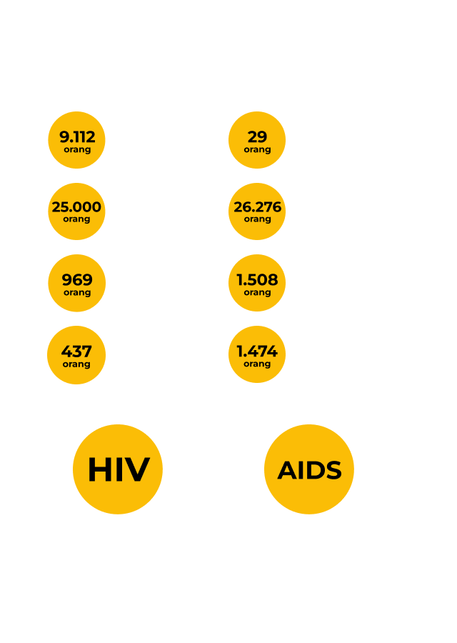
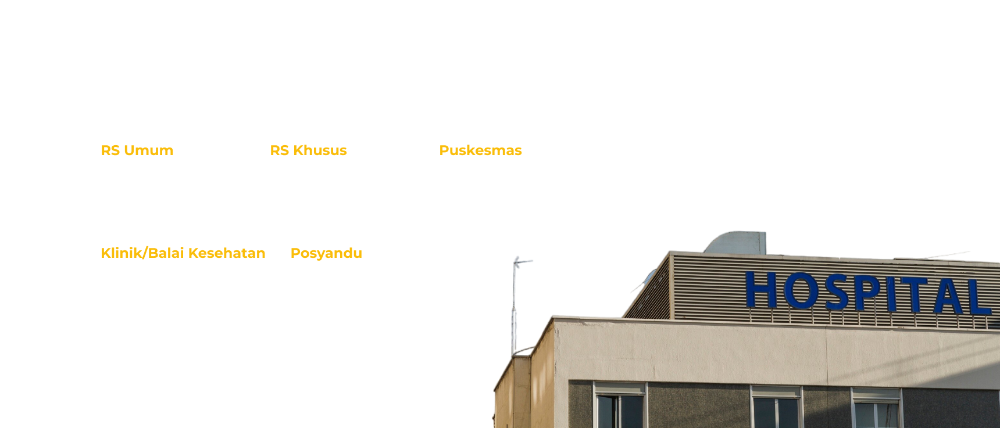
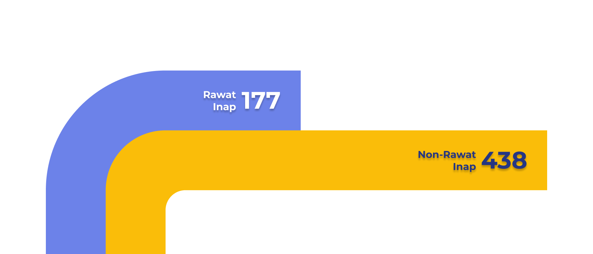

Data Pendidikan
Sumatera Utara
Angka Harapan Hidup (AHH)
Jumlah Tenaga Kesehatan
Jumlah Kasus Penyakit dan Jenis Penyakit

Jumlah Faskes

Presentase Penduduk yang Memiliki Jaminan Kesehatan
Jumlah Pegawai Dinas Kesehatan Sumut dan UPTD
Jumlah Pegawai Dinas Kesehatan Sumut dan UPTD
